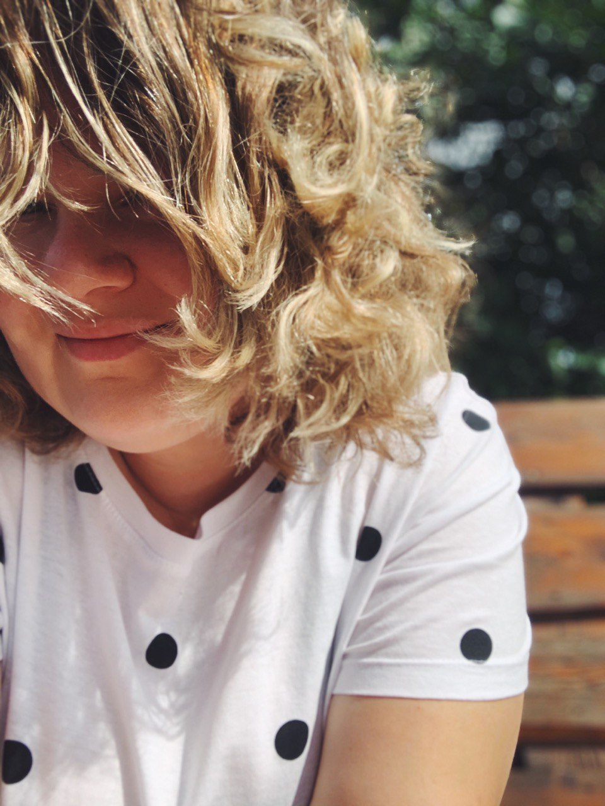

МЕНЮглавная страницао Дарьездесь вы найдете:
примеры работ |
О себе"Я мобильный фотограф и видеограф, снимаю на камеру своего смартфона. Стаж съёмки 3 года. Люблю снимать природу, пейзажи, город. Людей тоже снимаю, но с ними мне сложнее." Как Вы пришли в фото- и видеосъемку?"Желание учиться снимать красиво пришло как способ отдыха, медитации после будней многодетной мамы. Для меня это способ побыть наедине с собой, выразить себя в творчестве. Училась фото- и видеосъёмке именно на мобильный телефон, потому что он всегда под рукой и занимает мало места по сравнению с тяжелой камерой. Даже в момент бега за маленьким ребёнком можно успеть поймать кадр:)" "Разрешаю себе не снимать, если нет желания и вдохновения. Это совершенно нормально. Процесс творчества не обязан быть непрерывным. Так же мне всегда помогает наполниться визуально прогулка в одиночестве в какое-нибудь красивое место." "Могла бы научить основам съёмки, потому что базовые правила работают для любой камеры и любого вида съёмки (это свет, композиция, геометрия кадра). Мне самой было бы интересно вести обучение в формате живых занятий с учеником, сразу соединяя теорию и практику." |

Контактные данные [ссылка на instagramm] [ссылка на telegramm-канал] [номер телефона для звонка/связи по WhatsApp] Список услуг фотосъемка/видеосъемка на заказ (портреты, событие, контент для брендов) — х₽ обучение основам съемки (фото/видео/все вместе) — х₽ |